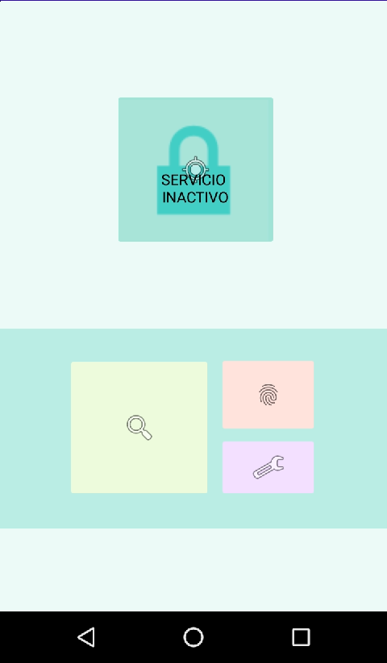
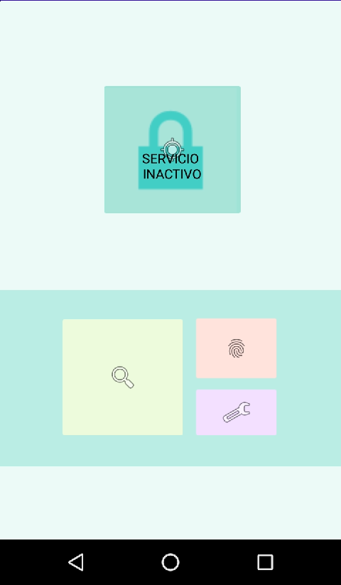

"Servicio de cifrado asimetrico para archivos enviados a través de WhatsApp"
 

Esta es una aplicación que es realizado con otro compañero de la Universidad, que ofrece un servicio de monitoreo para la aplicación de mensajería instantánea WhatsApp, la aplicación está hecha con Android Studio usando el lenguaje de programación Java. Ademas de obtener una de las funciones de cifrado asimétrico con el algoritmo RSA.
Partes del funcionamiento de este servicio es el algoritmo que monitorea las carpetas de WhatsApp, ya que usamos el concepto de Threads para poder aplicarlo a todas las carpetas (imágenes, documentos, fotos y videos). Otra función es el cifrado RSA, que es un algoritmo existente de cifrado asimétrico que adaptamos para poder aplicarlos con los archivos ya mencionados.
La aplicación trabaja en segundo plano con WhatsApp, por lo que esta no puede causar fallas técnicas en los móviles. Una parte que hay que mencionar, es que también cuenta con una gestión para las llaves (llaves que se usa para cifrar / descifrar), usamos Firebase Database para registrar los usuarios que suben sus llaves y así llevar un registro, usamos Firebase Store para almacenar dichas llaves y así poder descargarlos si otro usuario quiera usarlo.